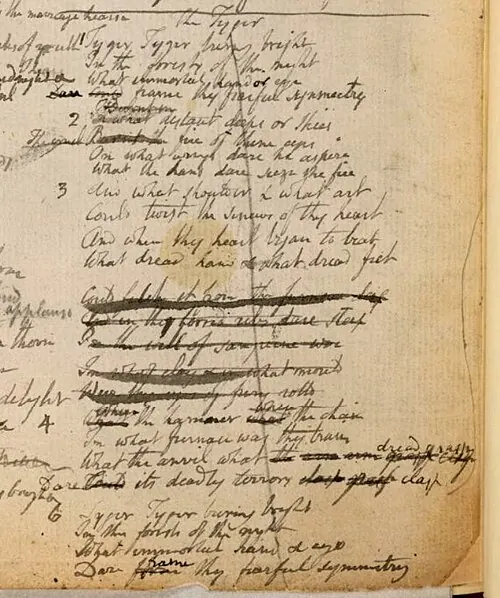
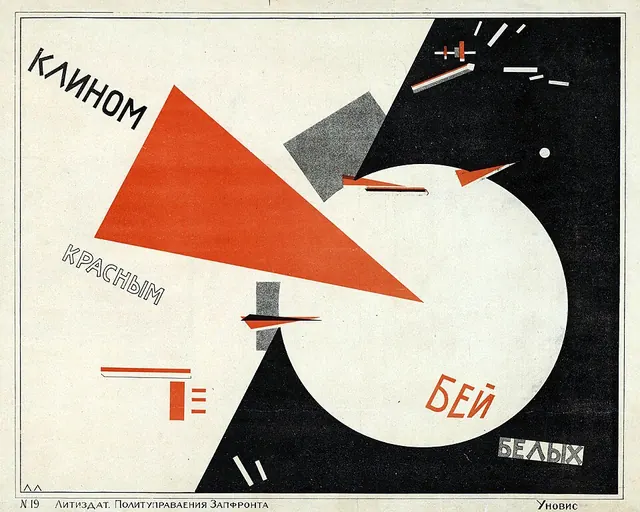

Dar forma a uma história
Que forma tem uma história, por baixo do que conta?
0 de 7 peças feitas
Abrir →Lente
Observa uma escolha, experimenta uma regra e cria uma peça tua.
como os outros fizeram
Porque é que resulta?
Os seis percursos de Ver →
Que forma tem uma história, por baixo do que conta?
0 de 7 peças feitas
Abrir →O que move uma personagem, e o que lhe faz o lugar?
0 de 5 peças feitas
Abrir →Onde se esconde o que ninguém diz?
0 de 4 peças feitas
Abrir →Em quem confias quando alguém conta?
0 de 4 peças feitas
Abrir →O que descobre quem olha devagar?
0 de 6 peças feitas
Abrir →Como se filma um texto?
0 de 8 peças feitas
Abrir →uma regra de cada vez
Que escolha queres treinar?
Os seis percursos de Treinar →
Como dás a sentir um lugar?
0 de 5 peças feitas
Abrir →O que fica por trás de uma fala?
0 de 5 peças feitas
Abrir →Como reconheces uma personagem sem a descrever?
0 de 5 peças feitas
Abrir →Quanto pesa uma palavra?
0 de 5 peças feitas
Abrir →O que mostras primeiro, e pelos olhos de quem?
0 de 5 peças feitas
Abrir →Onde tropeça o teu texto?
0 de 5 peças feitas
Abrir →uma peça, com palavras e imagens
Como levas uma ideia mais longe?
Os cinco percursos de Criar →
O que falta a uma ideia para ser história?
0 de 8 peças feitas
Abrir →Em que meio vive melhor uma ideia?
0 de 5 peças feitas
Abrir →Como crias a partir do que já existe?
0 de 6 peças feitas
Abrir →Qual das duas versões escolhes, e porquê?
0 de 4 peças feitas
Abrir →O que acontece a uma ideia quando sai da página?
0 de 5 peças feitas
Abrir →0 de 92 peças feitas
O que fizeste fica só neste aparelho. Abrir uma peça não a marca como feita.
O ficheiro guarda só os estados, sem respostas nem textos.